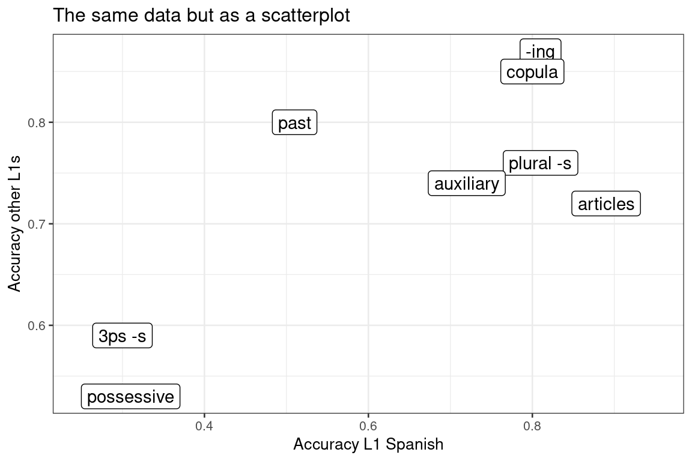

A closer look at a classic study (Bailey et al. 1974)
graphs
In this blog post, I take a closer look at the results of a classic study I sometimes discuss in my classes on second language acquisition. As I’ll show below, the strength of this study’s findings is strongly overexaggerated, presumably owing to a mechanical error.
Bailey et al.’s (1974) Is there a ‘natural sequence’ in adult second language learning? is a crisp paper that’s been cited over 1,000 times (according to Google Scholar). Here’s the relevant bit from the abstract:
“The Bilingual Syntax Measure (…) was administered to 73 adult learners of English as a second language in order to investigate accuracy of usage for eight English functors. It was found that there is a highly consistent order of relative difficulty in the use of the functors across different language backgrounds, indicating that learners are experiencing intra‐language difficulties.”
This finding and others like it were quite readily interpreted, in the spirit of the age, as suggesting that learners’ L1 didn’t affect the order with which they acquired grammatical morphemes in the L2.
The conclusion that there is a “highly consistent order of relative difficulty” is based on the following finding:
“Pearson product-moment correlations were performed on the relative accuracy of the use of the eight grammatical morphemes between Spanish and non-Spanish speakers (…). There was a significant correlation between relative accuracies of function words for Spanish and non-Spanish speakers (r = .926, p < .005, one-tailed test).” (p. 238)
While the study itself has been criticised on a number of grounds, the correlation coefficient of r = 0.926 has been reproduced in handbook chapters and overview articles without much comment. But based on Bailey et al.’s own data, their correlation coefficient isn’t anywhere near 0.926 to begin with.
Bailey et al. investigated how accurately L2 English learners used eight English grammatical morphemes. They then split up their learner sample into learners with Spanish as their native language and learners with another native language (including Italian, Greek, Hebrew, Chinese, and Japanese). The results were shown in a graph similar to Figure 1 below.
Figure 1 is a pretty non-standard way of showing the data underlying a correlation coefficient, so I extracted the (approximate) data points it contained and replotted them as a scatterplot for a class I teach:

Now, if you’ve seen enough scatterplots in your life, you know that the relationship shown in Figure 2 doesn’t have a Pearson correlation of 0.93. Indeed, the actual Pearson correlation is r = 0.76. (The Spearman correlation is 0.47, in case you were wondering.)
So what went wrong? I end up with a Pearson correlation coefficient extremely close to Bailey et al.’s 0.926 when I independently sort both the Spanish and non-Spanish data from high to low. That is to say, I suspect that what went wrong here is that the authors inadvertently paired up the Spanish speakers’ accuracy on articles (their strong suit) with the non-Spanish speakers’ accuracy on -ing (their strong suit), the Spanish speakers’ accuracy on -ing (their 2nd best) with the non-Spanish speakers’ accuracy on copulas (their 2nd best), and so on. Obviously this yields a strong correlation coefficient – their rank orders are already perfectly correlated. But it’s also quite nonsensical.
Incidentally, I don’t think correlation coefficients are too useful for addressing Bailey et al.’s question, and I think their study suffers from other methodological issues, too (e.g., the hodgepodge of L1 background collapsed into ‘other’, and whether accuracy on, say, past tense can meaningfully be compared with accuracy on articles). But I think the field is already well-versed in such conceptual methodological reflection, while being at the same time a tad too eager to take the quantitative results themselves on good faith.
For those interested, these are the data I extracted from Bailey et al.’s Figure 1. They won’t be perfectly accurate, but they should be close enough.
Functor Spanish Other
1 -ing 0.81 0.87
2 copula 0.80 0.85
3 plural -s 0.81 0.76
4 articles 0.89 0.72
5 auxiliary 0.72 0.74
6 past 0.51 0.80
7 3ps -s 0.30 0.59
8 possessive 0.31 0.53